| Caracteres |
Hepáticas |
Antocerotas |
Musgos |
| Protonema |
Reducido |
Muy
reducido |
Muy
desarrollado |
| Gametofito |
Taloso
o
folioso |
Taloso |
Folioso |
| Rizoides |
Unicelulares |
Unicelulares |
Pluricelulares |
| Filidios
(hojuelas) |
En
2
hileras |
No
tiene |
En
3
o más hileras |
| Plastos |
Numerosos |
Uno
solo |
Numerosos |
| Esporofito |
Cápsula
con
seta corta o larga |
Cápsula
de
crecimiento prolongado |
Cápsula
con
seta larga |
| Cápsula |
Con
fisuras |
Con
fisuras |
Con
opérculo |
| Hepáticas foliosas | |
|
|
|
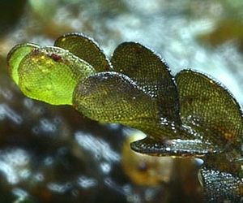 Foto: Des Callaghan ©British Briological Society, 2012 |
| Hepaticas talosas sencillas | |
Foto: Metzgeria furcata, por Michael Becker, tomada de Wikipedia Commons |
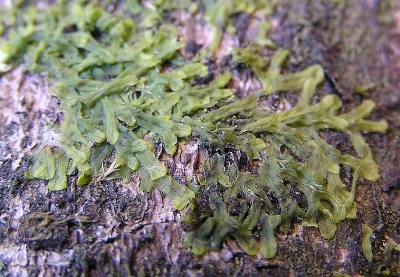 |
| Hepaticas talosas complejas | |
|
|
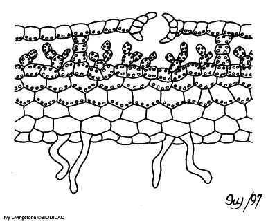 |
|
|
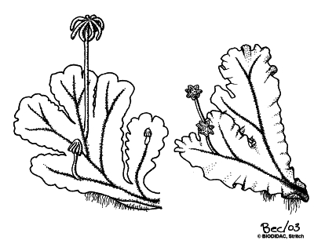 |
|
|
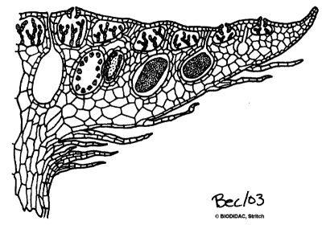 |
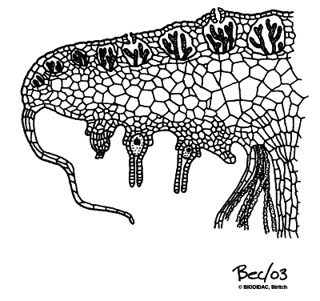 |
| Dibujos de Marchantia polymorpha, por Ivy Livingstone (Ivy) y Rebecca Stricht (Bec) - BIODIDAC | |
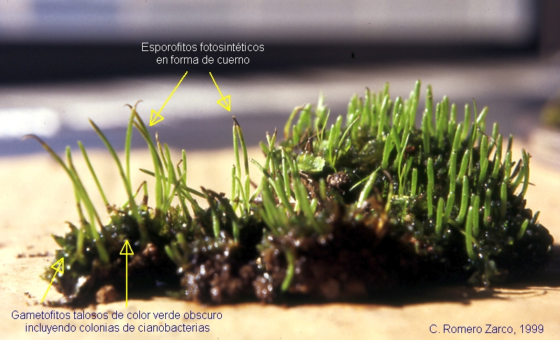
| Es el grupo más numeroso (15.000 spp.) y el más conocido por su abundancia en los lugares habitados de las zonas templadas. Se suelen reconocer 3 subclases. Aqui trataremos las dos más importantes | |
| 1) Subcl. Bridae (Bríidas).- Constituye el grueso de las especies de la clase; son los musgos típcos. Tienen cápsula con opérculo y peristoma | |
|
|
|
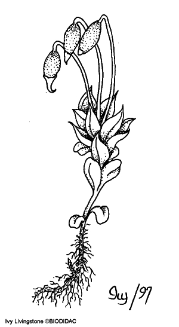 |
|
|
Bryum pendulum
|
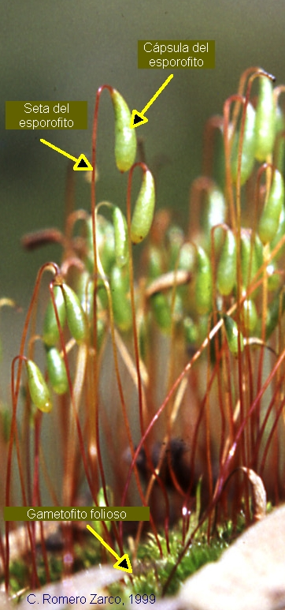 |
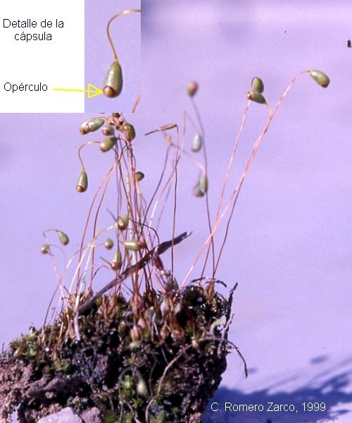 Funaria higrometrica |
|
|
|
| 2) Subcl. Sphagniidae (Esfágnidas).- | |
Dibujos de Ivy Livingston y Rebecca Stritch en tomadas de BIODIDAC |
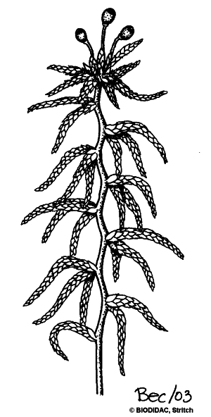 |
|
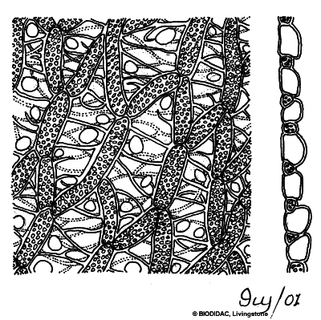 |
|
|
|
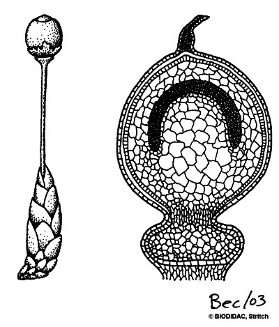 |